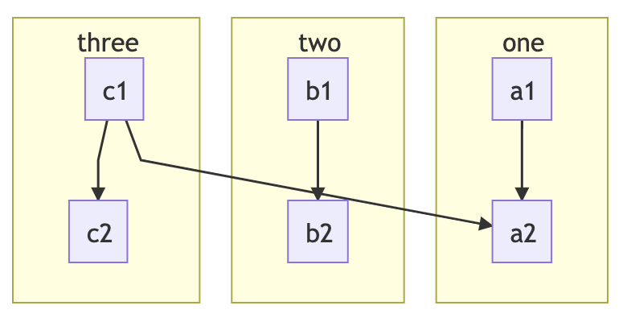

Advanced Mermaid Notes
Overview
Support
This is provided to help users get Mermaid running, but we do not officially offer technical support for Mermaid. Any issues encounter will require the user to debug it themselves.
There may or may not be issues using an older or newer version of Mermaid than what we have documented here. We may not be always be up to date with the latest and greatest Mermaid version.
We would be happy to accept pull requests that offer to improve things here or to correct misinformation.
In SuperFences we cover custom fences and provide an example for using Mermaid diagrams. What we showed in the example is the bare minimum required to get Mermaid working. While our example was mainly meant to instruct users on how to use custom fences, it was not our intent to give an in depth explanation on how to get Mermaid setup and working in the best way possible. To be honest, Mermaid is a little buggy and required some workarounds to alleviate some if its quirks.
In general, we leave setting up custom fences for the user to explore, but we do get asked occasionally how to get Mermaid working, and what we are doing, so we thought we'd share some some additional information in case there is a strong desire from any of our users to implement a robust Mermaid solution.
If you'd like to see exactly what we do, you can checkout our source code, but in this example, we will show the basics.
Practical Diagrams
There are a few diagrams that we feel do not work well for us, and we thought it useful to share why. The main reason is that a few of the diagrams are a bit impractical to use due to sizing and scaling issues. While there may be a way to massage them to work, we have not currently invested any time in workarounds for these diagrams.
Some of the less practical examples may work better if they were pre-rendered and included as an image instead. This seems to be what Mermaid does in their own documents.
Practical
graph TD
A[Hard] -->|Text| B(Round)
B --> C{Decision}
C -->|One| D[Result 1]
C -->|Two| E[Result 2]sequenceDiagram
participant Alice
participant Bob
Alice->>John: Hello John, how are you?
loop Healthcheck
John->>John: Fight against hypochondria
end
Note right of John: Rational thoughts <br/>prevail!
John-->>Alice: Great!
John->>Bob: How about you?
Bob-->>John: Jolly good!classDiagram
Class01 <|-- AveryLongClass : Cool
Class03 *-- Class04
Class05 o-- Class06
Class07 .. Class08
Class09 --> C2 : Where am i?
Class09 --* C3
Class09 --|> Class07
Class07 : equals()
Class07 : Object[] elementData
Class01 : size()
Class01 : int chimp
Class01 : int gorilla
Class08 <--> C2: Cool labelerDiagram
CUSTOMER ||--o{ ORDER : places
ORDER ||--|{ LINE-ITEM : contains
CUSTOMER }|..|{ DELIVERY-ADDRESS : usesstateDiagram
[*] --> First
First --> Second
First --> Third
state First {
[*] --> fir
fir --> [*]
}
state Second {
[*] --> sec
sec --> [*]
}
state Third {
[*] --> thi
thi --> [*]
}gitGraph
commit
branch hotfix
checkout hotfix
commit
branch develop
checkout develop
commit id:"ash" tag:"abc"
branch featureB
checkout featureB
commit type:HIGHLIGHT
checkout main
checkout hotfix
commit type:NORMAL
checkout develop
commit type:REVERSE
checkout featureB
commit
checkout main
merge hotfix
checkout featureB
commit
checkout develop
branch featureA
commit
checkout develop
merge hotfix
checkout featureA
commit
checkout featureB
commit
checkout develop
merge featureA
branch release
checkout release
commit
checkout main
commit
checkout release
merge main
checkout develop
merge releasejourney
title My working day
section Go to work
Make tea: 5: Me
Go upstairs: 3: Me
Do work: 1: Me, Cat
section Go home
Go downstairs: 5: Me
Sit down: 5: MeImpractical
Gantt charts usually are too big to render properly in a page. If the element is big enough to hold it, and the chart is large, they render too small to see. If the element is not wide enough, the chart can sometimes render squished and hard to read.
gantt
dateFormat YYYY-MM-DD
title Adding GANTT diagram to mermaid
excludes weekdays 2014-01-10
section A section
Completed task :done, des1, 2014-01-06,2014-01-08
Active task :active, des2, 2014-01-09, 3d
Future task : des3, after des2, 5d
Future task2 : des4, after des3, 5dPie at times can seem to work great, but other times it can be hard to read or missing labels all together. Like the others in this list, it relates to sizing and scaling. For instance, if you were to view this on a mobile device, you'd likely see the key for the pie chart missing.
pie
title Key elements in Product X
"Calcium" : 42.96
"Potassium" : 50.05
"Magnesium" : 10.01
"Iron" : 5Configuration
We do some configuration via the initialization API command to tweak the diagrams a little. This includes theming and disabling of problematic features.
We include the Mermaid library normally, but use a custom loader as we wrap our diagrams in a non-standard way. In addition, our custom loader allows us to workaround some problematic issues that arise when using Mermaid's default loader.
For illustrative purposes, we've provided a basic, bare minimum configuration below that we use.
window.mermaidConfig = {
startOnLoad: false,
theme: "default",
flowchart: {
htmlLabels: false,
useMaxWidth: false
},
er: {
useMaxWidth: false
},
sequence: {
useMaxWidth: false,
noteFontWeight: "14px",
actorFontSize: "14px",
messageFontSize: "16px"
},
journey: {
useMaxWidth: false
},
gitGraph: {
useMaxWidth: false
}
}
Configuration Notes
-
We disable
htmlLabelsin flowcharts as we've had issues with it in the past. It may or may not be okay to enable. Your mileage may vary. -
If the option is available in a diagram, we disable
useMaxWidthas we prefer that our diagrams do not scale within their parent element, we rather them overflow with a scrollbar. You can leave these enabled if you like. Since we render our diagrams under a custom element with a shadow DOM, to get scrollbars, we simply enableoverflow: autoon the customdiagram-divelement (under the host DOM, not the shadow DOM). -
We disable
startOnLoadas we provide our own loader (for reasons we will get into later). -
We do a quite a bit of custom theme overrides. Most of this is done through the Mermaid configuration options:
theme,themeVariables, andthemeCSS. Most users would simply use one of the default themes via thethemeoption, so that is what we've shown above.
Custom Loader
While using Mermaid, we've found a couple of issues which we were able to solve by using our own custom loader. The loader contains all the logic needed to find the Mermaid diagrams, convert them, wrap them in a shadow DOM, and insert them into the current document.
In order to use the loader, it should be attached to a DOMContentLoaded event to execute only after the document is
loaded. We bind our logic to this event in our loader function that checks if the Mermaid library is loaded, and only if
it is, we execute the payload.
The issues we are working around withing Mermaid are found below:
Issues
-
Diagrams that are found in tabbed interfaces or details, where the element may be hidden on page load, don't always render at a visible size if using Mermaid's default loader.
-
Mermaid uses IDs in their SVG diagrams, and these can sometimes cause conflicts if you happen to have IDs on your page that match one that they use.
-
Mermaid does not always use unique IDs. This can cause some elements of a diagram to disappear if one diagram happens to have the same ID and it is hidden in a details element or a tabbed interface.
We solve these issues doing a couple things in our own custom loader.
Solutions
-
Using the
<body>element as a parent, we attach a surrogate element to it and render the diagram there. Once rendered, we then insert the diagram back to where the original custom fence was. This ensures it renders under a visible parent, and renders at a normal size. -
We wrap each diagram in a shadow DOM element. This prevents ID leakage from one diagram to another or to the host.
Apart from the issues we were trying to solve, we also use a custom loader for personal aesthetics as we like to render
our diagrams in <pre><code> tags. This allows us to render the diagrams as normal code blocks in the rare case
that we cannot load the Mermaid library from the specified CDN.
Putting it All Together
So, putting it all together, we have the HTML generated by SuperFences. In the HTML, we include the Mermaid library and provide the configuration. We also have the custom loader that is runs when the document is loaded.

<!-- Pre/code generated by SuperFences -->
<pre class="mermaid"><code>graph TB
c1-->a2
subgraph one
a1-->a2
end
subgraph two
b1-->b2
end
subgraph three
c1-->c2
end</code></pre>
<!-- Include Mermaid script and user config -->
<script src="https://unpkg.com/mermaid@9.4.0/dist/mermaid.min.js"></script>
<script>
window.mermaidConfig = {
startOnLoad: false,
theme: "default",
flowchart: {
htmlLabels: false
},
er: {
useMaxWidth: false
},
sequence: {
useMaxWidth: false,
noteFontWeight: "14px",
actorFontSize: "14px",
messageFontSize: "16px"
}
}
</script>
const uml = className => {
// Custom element to encapsulate Mermaid content.
class MermaidDiv extends HTMLElement {
/**
* Creates a special Mermaid div shadow DOM.
* Works around issues of shared IDs.
* @return {void}
*/
constructor() {
super()
// Create the Shadow DOM and attach style
const shadow = this.attachShadow({mode: "open"})
const style = document.createElement("style")
style.textContent = `
:host {
display: block;
line-height: initial;
font-size: 16px;
}
div.diagram {
margin: 0;
overflow: visible;
}`
shadow.appendChild(style)
}
}
if (typeof customElements.get("diagram-div") === "undefined") {
customElements.define("diagram-div", MermaidDiv)
}
const getFromCode = parent => {
// Handles <pre><code> text extraction.
let text = ""
for (let j = 0; j < parent.childNodes.length; j++) {
const subEl = parent.childNodes[j]
if (subEl.tagName.toLowerCase() === "code") {
for (let k = 0; k < subEl.childNodes.length; k++) {
const child = subEl.childNodes[k]
const whitespace = /^\s*$/
if (child.nodeName === "#text" && !(whitespace.test(child.nodeValue))) {
text = child.nodeValue
break
}
}
}
}
return text
}
// Provide a default config in case one is not specified
const defaultConfig = {
startOnLoad: false,
theme: "default",
flowchart: {
htmlLabels: false
},
er: {
useMaxWidth: false
},
sequence: {
useMaxWidth: false,
noteFontWeight: "14px",
actorFontSize: "14px",
messageFontSize: "16px"
}
}
// Load up the config
mermaid.mermaidAPI.globalReset()
const config = (typeof mermaidConfig === "undefined") ? defaultConfig : mermaidConfig
mermaid.initialize(config)
// Find all of our Mermaid sources and render them.
const blocks = document.querySelectorAll(`pre.${className}, diagram-div`)
const surrogate = document.querySelector("html")
for (let i = 0; i < blocks.length; i++) {
const block = blocks[i]
const parentEl = (block.tagName.toLowerCase() === "diagram-div") ?
block.shadowRoot.querySelector(`pre.${className}`) :
block
// Create a temporary element with the typeset and size we desire.
// Insert it at the end of our parent to render the SVG.
const temp = document.createElement("div")
temp.style.visibility = "hidden"
temp.style.display = "display"
temp.style.padding = "0"
temp.style.margin = "0"
temp.style.lineHeight = "initial"
temp.style.fontSize = "16px"
surrogate.appendChild(temp)
try {
mermaid.mermaidAPI.render(
`_diagram_${i}`,
getFromCode(parentEl),
content => {
const el = document.createElement("div")
el.className = className
el.innerHTML = content
// Insert the render where we want it and remove the original text source.
// Mermaid will clean up the temporary element.
const shadow = document.createElement("diagram-div")
shadow.shadowRoot.appendChild(el)
block.parentNode.insertBefore(shadow, block)
parentEl.style.display = "none"
shadow.shadowRoot.appendChild(parentEl)
if (parentEl !== block) {
block.parentNode.removeChild(block)
}
},
temp
)
} catch (err) {} // eslint-disable-line no-empty
if (surrogate.contains(temp)) {
surrogate.removeChild(temp)
}
}
}
// This should be run on document load
document.addEventListener("DOMContentLoaded", () => {uml("mermaid")})
Live Example
For a live, working example, check out the CodePen here.
Using in MkDocs
If you are using MkDocs, you would probably include your config, mermaid library, and then your loader:
markdown_extensions:
- pymdownx.superfences:
preserve_tabs: true
custom_fences:
# Mermaid diagrams
- name: mermaid
class: mermaid
format: !!python/name:pymdownx.superfences.fence_code_format
extra_javascript:
- optionalConfig.js
- https://unpkg.com/mermaid@9.4.0/dist/mermaid.min.js
- extra-loader.js
Then in your documents, do something like this:
```mermaid
graph TD
A[Hard] -->|Text| B(Round)
B --> C{Decision}
C -->|One| D[Result 1]
C -->|Two| E[Result 2]
```
To get something like this directly embedded in your documents:
graph TD
A[Hard] -->|Text| B(Round)
B --> C{Decision}
C -->|One| D[Result 1]
C -->|Two| E[Result 2]